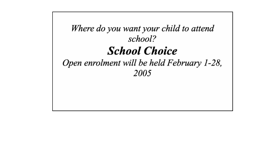

Some
Views
Some
Views
Going to School or Getting an Education
Recently my wife mentioned that a daughter of a friend had difficulty finding employment, especially well paid employment. This puzzled my wife and she added that the young lady in question” had a good education”. I asked “How do you know?” My wife replied, “She has a master’s degree from…” and she named a university. “That tells me about her schooling,” I said, “but how do you know that she has a good education?”
This thinking is prevalent both inside and outside the system. We do not similarly confuse health and hospitalization, religion with church attendance or citizenship with court appearances. Why, therefore, do we continue to speak of education when we mean schooling? Educators, at least, should know the difference. In my view, it reflects sloppy thinking.
Good’s Dictionary of Education defines schooling as “individual training or education received in an educational institution, military or civilian.” Education, on the other hand, is defined as “the aggregate of all processes by means of which a person develops abilities, attitudes and other forms of behaviour of positive value in the society in which he lives.” Schooling is that part of one’s education resulting from one’s experiences while in school.
George Bernard Shaw is reputed to have said, “At a very early age, I had to interrupt my education to go to school”. Bud MacDougall, a Canadian business icon now deceased, once said, “I left school at 14 and I’ve regretted it all my life. Biggest mistake I ever made. Should have left when I was 12.” It has also been said that we should bestow a bachelor’s degree on all newborns so that the process of education will not be disturbed in later life.
I am not knocking the value of schools; they are major contributors to one’s education. But so are the home, church, peers, travel, the community and others. The popular view is that we get our education in schools and from elsewhere we get only experience. But isn’t the essence of education learning from experience wherever that experience occurs? One’s education is certainly lacking without the knowledge and understanding of history, language, science, mathematics and the arts. Add to that the need for highly honed communication skills. These are certainly contributors to one’s education but they are not one’s education.
Some parents prefer to teach their children at home. We call it home schooling. Since home schooling usually follows the school curriculum, why not call it home education? We refer to people being self-taught, self made, home schooled but I’ve not encountered the term “home-educated”. Why not?
The school system draws its content from a narrow range of disciplines. Typical school subjects include English, French, science, art, physics, chemistry, biology and mathematics. Education, on the other hand, draws its content from real life and addresses the issue of what one can do with what one knows. A measure of one’s education is the level and extent to which one can apply what one has learned – that is a higher level of learning than found in most schooling.
Perhaps the difference between education and schooling is best illustrated by the way they are described. Our schooling is often described by the number of years of study, the institutions at which we studied or from which we graduated, the results of our examinations and the diplomas and degrees we hold.
One’s level of education, on the other hand, defies such precise description - but would likely be described in terms of ones ability to:
Practice good citizenship
Communicate with people at all levels
Demonstrate personal, civic, social and environmental responsibility
Apply technology
Solve problems
Demonstrate a positive work ethic, and
Exercise respect and cooperation.
Blurring the differences between education and schooling may work to the advantage of educational institutions but does nothing for learners. In fact, blurring the differences is more likely to:
Discourage life long learning
Create dependence rather than promote self reliance
Limit learning to what is available in school or organized by teachers
Limit the range of studies to traditional disciplines,
Deemphasize the importance of personal skills such as self-reliance, problem solving, entrepreneurship and creativity.
A system is in place to provide schooling, and I think it is a good one. But let’s call it what it is, a school system not an education system. Removing the confusion is a first step in improving education.
What Makes Education Vocational
For most of my life, I have been a vocational educator, and proud of it. The truth is, however, that my early training and experience were in academic or general education, and my major in graduate school was secondary education. In fact, I am one of a very small number of teachers in New Brunswick with a foot in both camps having both an academic and a vocational teacher’s license, and those who read my letters to the editor will, I believe, find that they address a broad rather than the narrower field.
.
The term vocational has long lost its luster in North America but, I am told, is still perfectly acceptable elsewhere in the world. In my view, much of the formal study of a doctor, lawyer or clergyman is as vocational as that of a carpenter, accountant or nurse. So, on what basis do we decide whether education is general or vocational?
Course or program name? Most would agree that welding, carpentry; electrical, mechanics and machinist are vocational programs. Some would add cooking, photography and secretarial studies. The ministry is often referred to as a vocation. And I certainly would add medicine, law, accounting and the other professions. Each is an integrated program of studies leading to a recognized qualification intended to prepare takers to be producers.
Entrance requirements? Should we measure “vocationalness” of programs by the number of years of schooling required prior to entry; I’ve encountered that approach but I also reject it.
Length of program? One could consider the length of training program as a factor in distinguishing vocational programs. I’ve been part of discussions where vocational programs were defined as one year or less, programs for technicians were a minimum of two years, programs for technologists were at least three years in duration while four years was the standard for a first degree. But that too has changed.
Designation awarded? Maybe vocational programs should be distinguished by the piece of paper awarded by the training institution. The problem is that many institutions offer a range of programs and, while I would argue that a degree in engineering or music is vocational I cannot make the same argument for a general BA. Institutions offer too many pieces of paper for this to be a determinant.
.Institution offering the program? Fifty years ago, Canada had separate vocational schools, institutes of technology, colleges and universities and their offerings were clearly distinguishable. Today, however, community colleges have become multi-purpose institutions offering courses in a wide range of fields and levels. Furthermore, one can find introductory accounting courses, for example, with essentially the same content being offered in secondary schools, community colleges, universities and in the private sector.
Focus? In my reading, I encountered a statement developed in the state of Oregon on “life roles”; according to the statement, people fill the following life roles: learner, citizen, family member, individual, producer and consumer. The focus may change throughout one’s life, but the roles remain. Preparation for these roles underlies all schooling although rarely stated. Presumably, then, vocational education prepares one for the life role of “producer”.
Exit standards? Performance standards also differentiate vocational from general education. The performance of a person learning for vocational purposes is measured against the same criteria as the performance of a person employed in the field. For a non-vocational student, however, the rating is usually on the quality of the final product regardless of how long it took.
In my definition, vocational education is that part of one’s education designed to develop and improve skills required by the learner in his/her role as a producer. The learner’s purpose for taking a course says it all.
The Cultural Divide
Each level of the school system has a responsibility to prepare its students for the next stage of a student’s life. Further education gets most of the attention; work is practically ignored.
Employment is an important part of our lives; most of us work to provide the wherewithal to do other things – own a car, travel, live on our own, get married, and own a house. Given the above, one would think that “work” would be a significant component of school studies yet schools give work a low priority if on their list at all. Learning some work-related skills while in the public school, it seems, is an unplanned bonus and not part of a school’s offering for most students.
Schools can and should ease the transition to work. Some schools offer technical or applied courses as part of their regular offerings, others have special days or weeks of job shadowing, job placements and co-op programs; some even offer special work readiness training but the latter tends to be limited to students having difficulty with their academic studies. – as though going to work is something that only applies to “poor” students. Employment related programs are often based on special funding rather than being a normal offering.
Schools can and do design some assignments to reflect real-life situations ― that is, real life in the community, not just life in further education. Writing assignments, for example, can be about the impact of an oil spill, the problem of disposing of our garbage, the life of the earliest residents, local government issues, the impact of increased minimum wages, the growth of the labor movement, the closing of a local major employer, etc. These are the kinds of issues which students are likely to encounter later as citizens; they are the kinds of issues likely to improve insight into the realities of later life.
There is a cultural divide between schools and later life. Schools operate in a manner that is consistent with the model that a student will encounter in further education but that model is at odds with the model that students will encounter in later life. An article in the March 1997 issue of the Phi Delta Kappan refers to schools “reinforcing anti-work attitudes.” Typical examples of such reinforcement include:
Students moving from one task to another after a set time whether or not the task is complete.
Students being dependent on teachers with work ending when the teacher leaves the room.
Schools are lacking a service mentality; for example, they welcome reasons to close rather than find ways to stay open.
Schools maintain an historic industrial organization structure even when that structure has changed dramatically in the work place.
Students are not encouraged to take responsibility for, or to invest in, their own education. If they miss a day, so what?
To this list I could addthat the school system:
Obscures accountability of teachers
Fails to recognize and reward high performance of teachers
Bases pay on past education and time served rather than performance
Emphasizes time rather than performance for both teachers and students
Has a very limited view of what constitutes education
Going to school is a student’s work and at least that part of one’s learning should reflect community-based standards. An article in the New York Times of March 4, 2004 documents employer experience with student interns. Most, but certainly not all, of the problem areas relate to work habits – work habits that are acceptable in school but certainly not in the work world. By poor work habits, I mean the ability to work as a team member, attitude towards fellow workers and to customers, inability or unwillingness to assume responsibility, etc. In short, the school environment should more closely reflect the expectations of the community that supports it, including the employment community. After all, that is where students will spend most of their lives.
College and University
I was still living in Ottawa during “The Unholy War That Rocked Prince Edward Island” in the late 1960’s Reaction to the merger of the two universities was noisy; as for a technical college, I am told that educators saw no pressing need. As I understand it, it was felt that the addition of a few courses at the Provincial Vocational Schools, or even, the addition of diploma courses at the university would be adequate. The expectations for the new institution were not very great. Forty years later, I am sure the view has changed.
Growing up on the east coast of New Brunswick, I was painfully aware of the exodus of young people for Toronto and points west. Most that made the journey found work but for many that work was low paid and heavy; too few could access well-paid jobs or opportunities in the then emerging economy. The focus of college programs became an issue. To what extent should the College limit itself to providing training in occupational areas not found in PEI or where employment opportunities were limited? The debate on this issue was neither long nor vigorous – but it did take place. It was taken for granted by the new Governors that Holland College would provide training for Islanders wherever their employment prospects would take them.
A modern industry requires highly skilled people. Without matching skills, people will not find work and without a pool of skilled workers, industry will steer clear of PEI as a place to do business. An earlier item dealt with the changing Canadian labour force and the same trends soon appeared on PEI. .
Understandably, people might wonder, in a small Province like PEI, if two institutions less than a mile apart were required especially since many of the courses had, or appeared to have, the same name and content. Why not, they asked, simply add a few new courses at the local university. A related suggestion was to mandate the new college to provide the first year of university similar to the CEGEP’s of Quebec. While some of my colleagues may disagree, there is no question in my mind but that the Island made the best decision. It would be difficult if not impossible to have developed programs of the same quality and with equal integrity had the college not been a separate institution.
Colleges differ from universities in that they:
Emphasize the application of knowledge rather than its acquisition
Base standards expected of students on those found in the workplace.
Draw content from the occupational field rather than from academic disciplines.
Judge success by the record of employment by its graduates
Offer an integrated program of theory and practice leading to a career rather than a series of courses
Rely heavily on the advice of advisory committees
While I support seamless transfer from college to university, university transfer was not a college objective. College programs were designed to prepare people to enter work. Students transferring to university should expect credit for work completed but it is a responsibility of a university, not a college, to provide required bridging, if any. The integrity of technical programs could easily be jeopardized through tampering at the college level in order to secure more university credit.
Consequently, Holland College viewed itself as an institution catering to the interest and need of all Islanders. Every Islander was ma potential client. The exception was Islanders whose first interest was in obtaining a university degree; the college would help each student but not design programs with university transfer in mind.
If the Learner Hasn’t Learned
Unfortunately, I taught for several years before I began to understand the teaching learning process. I say this, not in the sense of blaming my college professors but rather from the likely negative impact on my early students caused by my deficiency. Perhaps it was because I was the graduate from a small high school, because my initial teacher training was only of six months duration or even because I became a teacher in a one room rural school while still only 18 years of age. In any case, my understanding of teaching and learning only jelled several years after my teaching career was well under way. Thanks to additional formal study, learning on the job and a variety of both learning and life experiences, I began to gain new insight into the teaching-learning interaction.
At one point in my career, I was fortunate to participate in the teaching of teachers both on a full-time and short course basis, an experience that I enjoyed and will always cherish. The following statement always brought animated discussion:
If the learner hasn’t learned,
The teacher hasn’t taught
It was not intended as a trick statement but it certainly was one that brought vigorous discussion. I believed the statement then and I believe it still; a fact that tended to sharpen the debate. Try it on some of your friends who are teachers and judge the response by yourself.
The role of a teacher is to help others learn so, if the learner hadn’t learned the teacher hadn’t taught. But, my student teachers would say, some in the class would learn even if all the class did not... but classes do not learn; only a learner can learn; groups of learners cannot learn but individual learners can learn in a group setting. One does not teach a class; one may have a class of students but one teaches individuals not the class. Some learners may learn in the group setting but others may not. The statement therefore can only be made of a learner.
It is not always a teacher’s fault if one of his/her students did not learn. The learner may not have been ready to learn, may have resisted learning or may have had had one of the recognized impediments to learning. But teachers cannot say that they taught a student unless that student learned what the teacher taught.
The Teaching Learning Process
At age 17, in preparation for a teaching career, I attended Teacher’s College in Fredericton, N.B. Given the shortage of teachers after the war, the Province offered a six months training program twice a year at the newly named Teachers’ College. In September, while still only seventeen, I commenced teaching in a one-room rural school. It was an experience I will never forget. We survived; I learned; whether students learned is another matter.
I still recall, at least some of the information and instruction received in Teacher’s College about developing lesson plans, using audio visual aids, maintaining the school register, school law, psychology, teaching methods, etc. but I recall little if anything about the teaching-learning process. Learning about learning, unfortunately for my students, came much later. Perhaps it was included among our studies but, if offered, it certainly did not register with me. Sixty years later I ams convinced that a clear understanding of the teaching-learning process is critical; there are three components – the learner, the teacher and the process. Let’s start with the learner.
Some believe that a learner is an empty vessel waiting to be filled – from a big pitcher, the teacher, to a small pitcher, the learner. Others view learners as tender plants needing protection and nurturing with a teacher as the gardener. While I like the latter image, in my view, it portrays the learner as much too passive. Simply stated, a teacher is a person who helps another person to learn; a teacher is a person whose role it is to create conditions for effective learning.
Learning is a process of change. When a learner learns, the learner acquires more or different information, skills or attitudes. In educational jargon, changes may be in the cognitive, affective or psychomotor domains. Simply put, a person who has learned has new attitudes, skills or information or some combination thereof.
To learn is to change. Learning is an individual matter. Only the learner can learn. To help a learner to learn is to help bring about changes in the learner. The stimulus for learning may be internal or external and the actual learning may take place in a group setting or when the individual is alone. A teacher does not teach a class; a teacher teaches a number of individuals at the same time in a group setting.
Readers have likely heard the statement “A teacher hasn’t taught if a learner hasn’t learned”. That statement always brought vigorous discussion in my teacher training classes. I believe the statement to be true but it must be applied to each learner. A learner has learned only if there is a change of behaviour.
The role of a teacher is to stimulate learning – to create a set of circumstances so that a learner learns the desired behaviour. Teachers need a variety of techniques in their tool chest – and they will likely require all of them. Tools include acknowledging successful performance, setting an example, providing information, asking questions, setting time lines, assigning projects or home work, organizing field trips and assessing performance.
The trick for each teacher is to create a learning environment for each learner that will end up with each learner having a favorable experience even in a group setting. Not easy but it is the crux of good teaching. This requires a clear and written understanding of one’s teaching/learning model. I’ve visited many schools colleges and universities during my lifetime but am only aware of one that had a published learning model. Learning models should focus on the steps expected of a learner in the teaching/learning process. Having a learning model in place does not guarantee successful teaching but does give evidence that the organization has consciously thought about the learning process and that the teaching process is a deliberate one.
If you are a teacher, take a few minutes now to lay out your “ideal” learning model – the one towards which you strive rather than your existing one. On the left hand side of a page, make a small box and insert the words "Student registers for class”. On the right side of the paper, draw another box and print the words “Student exits class”. Now plot the steps that the learner takes between the entry and exit points. The model will likely not be a straight line so one should show the options available to a learner at each step in the process.
Your model likely includes such steps as student reviews course objectives, takes tests, prepares reports, participates in class discussions, performs laboratory experiments, completes work placement, takes final examination, exits course without completion, receives course credit, etc. Remember, this is a learning model not a teaching model. Some steps will be sequenced but the sequence suits the learner not the teacher and there will be a fast lane.
During the development process, ask yourself the following questions:
What is the first required step?
Is the sequence the same for all learners?
How do you handle a learner who already knows most of the work?
How do I know that a step is required by all?
What are the crucial points for my intervention? And why?
Answering the last question may take you back to your textbooks and to the latest journals. No doubt, your model will change as your knowledge and experience grows. At least mine did. With a learning model in place, it is now possible to develop a model of the teaching process. My students would have benefited from my having gone through such a process early in my career. For those still active in teaching, it is still not too late.
WHAT’’S AN “A”?
An “A” is a high mark; the only better one would be A+, AA, AAA, or even AAAA. The top students in school, college or university are the “A” students. People weren’t born “A” students; or if they were, they were not labeled as such. While parents may think they have a smart child, no parent I know would refer to their child an A, B or C child. It is only after children start school that they become so classified; schools like labels, I guess. The school system often applies other labels as well, or instead of, letters; they may also give students a GPA. number or even a figure ranging from zero to one hundred.
A student may earn an A on a single assignment, all assignments, on projects or an exam or even a subject studied for a whole year. A student who earns an A on all subjects is known as a “straight A” student. Many students get a mixture of A’s, B’s, C’s, D’s, and even F’s. Schools often average student's marks for a year although the logic of averaging marks on such diverse subjects as math, social studies, science and phys Ed continues to elude me.
The health system also uses numbers when determining the state of a person’s health. During a recent visit, my doctor quoted such figures as 170 pounds, 120 over 70 blood pressure, pulse of 72 and figures for PSA, cholesterol, etc. None of these numbers required judgment; all were based on tests. With figures in hand, and without averaging my test results, my doctor proceeded with judgments about my current state of health; I am happy to report that there were no major changes - either improvements or deteriorations.
I am intrigued by the differences in the ways the two systems deals with their information about the individuals they serve. A doctor uses the numbers to determine the state of a person’s health (no averaging of tests from different specialties); a teacher assigns numbers to announce the level of one’s knowledge of a field.
I made some enquiries of schools as to the meaning of an A in education and, in fact asked for written information; none was forthcoming. Some parents showed me recent transcripts which I found interesting but not very informative. I tried to search the internet but, not being very skilled, had little success in finding what constitutes an A.
I have trouble interpreting the meaning of an A. Oh, I know that it represents a judgment call by a teacher as to how well a student knows a subject - but it doesn’t tell me much about what a student can do with what he knows. Take Language Arts, for example, does having an A mean that the person writes clearly and logically, has a greater vocabulary than most other students, speaks well and with logic? If so, why not say so? If not, what does an A mean? It requires a definition. Information like this would be especially useful to employers.
In my notes and papers, I found a number of statements which I believe describe an A level of performance. Unfortunately, I do not know their sources.
An “A” level:
Plumber is a person who is able, on his own, to generally repairs or replaces my domestic plumbing while dealing with most unexpected problems during the process.
Writer is a person who is able to write creatively using acceptable standards of grammar, sentence structure and organization.
Chemical technician is a person who has a deep understanding of the process and can complete all important parts.
Speaker is a person who is able to communicate well, think concretely and abstractly, and analyze and interpret data.
Team member is a person who is able to consistently assess own behaviour and adjust to maximize group performance, stay on task, contributes useful ideas and defends them when appropriate, uses personal strengths effectively, assumes various roles, accepts a group perspective, participates without prompting.
“What’s an A?” is a reasonable question. Those being labeled deserve to know what it means. The rest of us need help with interpreting it in every day life.
Inverting the Pyramid
During the summer of 1948, I found work as a carpenter with a company building houses at the Chatham Air Base. I appeared at the gate about 7:30 one morning looking for work; by 8:00 o’clock I was assigned to a crew framing a new house. A couple of days later, I was cutting rafters and shortly thereafter the foreman assigned me to fitting trim around windows and doors.
Forty years later at Holland College, we designed programs with that employment practice in mind, that is, we introduced students to their field of study in the same manner that a new employee was introduced to the real work situation. Ours was a spiral curriculum with learners moving from simple to complex skills just as one would in the work situation. Even as students moved through their program, they recycled back through earlier skills as their interests and performance both required and allowed.
We also used this approach also to bring into the instructional mix both required and desirable skills and knowledge from science, mathematics and communication. Instruction and content were coordinated with skills being learned in the field of interest.
This approach tended to build on the interests that brought a learner to the College in the first place. An added advantage was the fact that, should a student decide at any point to discontinue training, he or she could do so with having already gained some basic employability skills.
The inverted pyramid:
Capitalizes on the student’s interest
Allows students to enroll in some of their interest courses and wuld probably reduce the first year drop out rate.
Provides students who drop out early with some employment skills
Reflects real life experience..
The reverse is to “load the first year with foundation courses - mathematics, physics, chemistry and communications. The theory behind this approach, apparently, is that having learned the “general rules”, the student is in a better position to understand the specifics. This emphasizes the view that learning proceeds from the general to the specific; based on my experience, that is not the case.
Is one better than the other? That depends. For older workers, the inverted pyramid reflects their actual career path. They entered the workforce with no or a limited amount of post secondary education, they picked up courses that were available as interest and time allowed. Frequently such courses were work related. Later in life, they took additional courses to broaden their education, to fill in some gaps or to obtain a diploma or degree.
A Four-letter Word
While I may not have an extensive vocabulary, I try to be reasonably careful about the words I use. Sometimes I slip although, even then, I’m not prone to using words which slur a listener’s race, gender, religion or politics. I’m also sensitive to the use of four letter words which, although common, may be offensive.
On the other hand, I am very comfortable with some four-letter words which other educators seldom use. The one which comes most quickly to mind is “work” - as in preparation for work. It is such a descriptive word; I am puzzled as to why we do not use it more frequently when speaking about the role of schools.
Where I grew up, work was a perfectly acceptable topic of conversation. As was the idea that going to school helped prepare one for work. It was understood at my home that those who completed high school, and for sure those who went beyond high school, were likely to have work which was easier and paid better than those who did not. The fact that some relative or friend “got a good job” was a mark of respect and carried to a certain degree of satisfaction - especially if it applied to a family member.
My recollection, also, is that a student’s “going to work”- finding a job- was perfectly acceptable topic of a conversation among teachers or at least, between teachers and students. As teachers, we knew that all of our students would go to work at some point in their lives and that was one of the major reasons why they had come to school.
Fellow students, when I was one, talked about work, looked forward to going to work, expected to go to work. That was one of the main reasons for going to school. This also applied to studies in college and university.
The idea of schools helping people prepare for work seems to have faded from sight. Schools now are bent on preparing students only for further education. In my view, preparing for further education and preparing for work are not the same thing; the difference is in the standards applied rather than the content taught.
Over the past few years I have had opportunity to review considerable literature from schools and from Departments of education. My reading suggests that, in the minds of the education officials, the connection between school and preparation for work is tenuous to say the least. Schools provide career exploration, job shadowing, transition, career awareness experiences; these are weasley words. They are not words that carry significance and accountability.
So how you may ask, if schools adopted an objective of helping young people prepare for work, what would they do that is different from what they do now? Probably not a whole lot but among other things they would likely:
Require a demonstrated acceptable level of skill in school subjects If students do not reach the published standard, a graduation diploma should not be awarded.
Include problem solving, team work and work habits and show ratings in the same way they now show ratings on history or chemistry.
Require an acceptable skill level in numeracy and information technology skills.
Require a level of knowledge and understanding of working life equivalent to their knowledge of requirements for further study.
Organize schools in a way that reflects work life rather than academic life.
Staff schools with people having a wide range of skills not just high levels of formal studies.
Would operate on a model that reflects real life not just formal education
I once asked a school trustee why his school did not offer more of an orientation to later employment. His answer was both clear and direct. “When the Minister tells us to, we’ll do it.” So, until the Minister decrees otherwise, schools will continue to limit their thinking to further education rather than the ultimate goal of being a productive citizen.
The Education Straight Jacket
The education system appears to thrive on taking control. For a period of twelve years or more, our young people spend a large chunk of each day and each year in a school system. The system determines the time they leave home, when and where they get on a school bus, how they act while on the bus, where to get off, when they enter the school, where they store their lunch and clothes, what subjects they will study, what rooms they will be in and when, when and where they will eat lunch, which teachers they may have, the text books to be used, when and where exams will be taken, when they may leave the facility, and the list goes on.
The system also controls the hour that teachers work, where they work, what they can teach, what they are paid, when a teacher must release a student to another teacher, the teaching-learning model, etc., etc., etc. Not much freedom in the system; not much room for professional judgment.
Schools continue to operate on an industrial organizational model; most other organizations have moved beyond that style of operation. The Minister decrees and the system executes. In many ways the system demands and reinforces a kind of behaviour that is not consistent with their role as wage-earners or members of the community. With that kind and level of bureaucracy, what chances does a teacher have of being innovative? Exploring new approaches? And the lowly learner is even more disadvantaged.
As a rule of thumb, we should not put control of any aspect of our life, including our education, into the hands of another, or at least not for any appreciable length of time; we should take control of our own affairs, finances, health, happiness, and I suggest, our owneducation. I believe that this is a good general rule even while recognizing the all of us for some periods, including when we are young, may need to relinquish control for special purposes or periods of clearly defined period.
We often hear and use the term learner-centered schools or learner centered education. But what does it really mean? Aren't schools now learner centered. After all, schools are there for children and they teach the things that children really need to know. How can schools be more learners centered than that?
Of course, schools are there for learners and thousands of learners present themselves to schools each day. Teachers are there to direct, teach and help. When you examine how schools operate, however, you will find that schools are organized for the convenience of teachers. They organize students based on age rather than by their learning needs.
No two students are at the same stage of development when they enter school nor are they at the same level at any time while they are in school or when they graduate. Neither do they have the same learning deficiencies or learn at the same rate.
A learner-centered education includes:
Both student and teacher having a clear understanding of the learner’s goals
An early diagnosis to identify areas that need attention
Short plans of action, learning plans, that the student intends to follow
Frequent assessment to determine progress
Frequent discussion of progress, problems and new learning activities
Having a lifelong learning advisor who fills the same role with a student
I understand that all teachers cannot teach all subjects but am of the view that many, perhaps even most, students could benefit from an ongoing relationship with a teacher that much the same as a family physician does with a patient. Regular classroom teachers could fill the role, but they are too busy coping with classes and subjects with the result that diagnosis and general monitoring or progress is overlooked. The diagnostic step is usually overlooked~ as though it was not necessary or didn't exist. This step might be likened to a visit to your family doctor. So a first and important step is missed and the child enters class. Individual attention is likely not to be provided unless the child becomes a problem - that is, falls significantly behind the remainder of the class.
The current system is designed to sever the connection that a student may have made with a teacher and, as a result, the learner moves on to the next class and a new homeroom teacher thereby depriving the learner of a person who already knows in some detail about his learning style, needs, accomplishments, etc. It is thought to be useful in medicine for a patient to have a family doctor for years; I am puzzled as to why a similar arrangement would not benefit learners as well.
Relevant Standards
Everyone seems to have a favourite story about educational standards; usually the story relates to communication skills and, more often than not, relates to a student’s ability to read, speak or write. It has ever been thus; criticisms go back at least to the time of the Greeks, but that is not to say that the issue should be ignored. What, for example, does an A mean? Or a B or C for that matter. In a social or work situation, what would differentiate between an A and a B student? What can an A student do that a B student cannot do? Does an A earned in school translate into an A in the workplace?
As background, I browsed a number of publications and searched the internet for a definition of standards; a couple of definitions referred to any "criterion on which things are judged." I also found a number of references to national standards, academic standards, program standards and occupational standards. These are fin, but I wanted a more basic definition. Since the definitions I found were incomplete, I decided to create my own.
Standard: A standard is a level of performance expected of a service or product
When applied to a school, standards are the level of service provided by a school and may be based on such criteria as range of offerings, cost, student staff ratio, availability of co-curricular activities, dropout rate, degrees held by staff, volumes in the library, etc. When applied to students, standards refer to how well students perform in one or more areas of study.
A standard has three components, criteria, levels and a benchmark. As an example criteria against which to evaluate writing may include:
Vocabulary
Style
Use of reference
Sentence structure
Creativity
Grammar,
Using the above criteria, we could describe a number of levels. The following example shows six levels:
6 Creatively written whiled observing acceptable standards of grammar, sentence structure and organization.
5 Very well organized showing precise and wide vocabulary, good sentence structure and appropriate grammar and some creativity.
4 Organized with few errors in grammar and sentence structure,
3 Organized with acceptable grammar and sentence structure.
2 Generally organized but shows limited vocabulary and significant errors in grammar and sentence structure.
1 Disorganized and unfocused with many errors in grammar and sentence structure accompanied by a limited vocabulary.
We also need benchmarks. Simply put, a benchmark is a level of performance which is widely recognized by practitioners and which serves as the reference point. A benchmark anchors a standard in reality. A benchmark for reading could be as simple as the ability to read and discuss articles in the daily paper. An average, competent or skilled plumber is “a person who comes to your house and can usually fix the plumbing problem without having to call or return to the shop. “
Whereas schools generally appear tominimize if not remove judgement into the process, in real life, and in Holland College judgement was an integral component. To help insure relevance we selected instructors that had worked in the specialty or supervised other I a given school. We also required transcripts to be signed by the appropriate instructor not some remote Registrr; this helped insure accountability of our instructors.
School is not a Competition
Whether I stand first or last in my school class is my business and only my business. I go to school for help with my learning, and I resent my grades being posted for all to see. If I want someone to know what my grades are, I will tell them. I have no evidence that posting my grades does anything for my education.
On the other hand, if I enter a competition, I expect to be ranked, and have my rank made public. But enrolling in an educational institution is not a race, not a competition – or it shouldn’t be. Institutions that rank students and publicize the results are doing their students a disservice. While schools may teach competition, it should not be run on a competitive basis.
Reaching an A level of performance in any subject is within reach of most students if given a few more hours of instruction. If an A is important, why not give students time to reach it? How long it takes to learn a skill and how quickly one can perform it are quite separate issues. Grades, at least theoretically, point to how much and how well a student learned in a given period of time; grades do not tell how much a student can do or how well in a given time – and it is the latter that counts outside of school. . Unfortunately, schools place limits on the achievement of many students by making time the constant and achievement the variable. Instead of designing a system that allows all students to reach the top level, Schools impose time limits that force some students to quit before they reach the level of which they are capable. Our current arrangement is to allow only one student to reach the top of the mountain each year and is the student, not the school that gets penalized.
Now I am not against student competitions and the recognition of high standing gained therein or for awarding prizes and publicity to winners. In fact, I think that there should be more competitions and rewards for educational accomplishments. My view, however, is that such competitions should be outside not inside the school system.
Schools are in the education business not the sorting business; they should not be in the sorting business. The publication of all grade information is sorting but publication of rank is sorting in its most odious form. Colleges and universities are and should be free to set the criteria for entrance and to institute their own selection procedures. Taking this position, I would argue, would allow schools to concentrate on providing a good education and not limit the educational experience to those subjects required for university or college entrance. Obtaining an education should not be limited to the few courses now required for high school graduation.
According to what I read, many secondary schools in the USA no longer rank high school students and some who do, refuse to release their rankings to universities and colleges. I am told that upwards of 50 percent of all high schools have taken this stand.
My own experience with ranking is limited and ancient. The one example that comes to mind, however, is a grade eight or nine graduation during which the rank of every student was given. The event made a lasting impression. I’ve often wondered about the impact of that event on the students’ future.
Its time to discontinue the practice of ranking students and spend the time gained in increasing their leves of performance.
Killing Ourselves by Degrees
Canadians like credentials. Places of work, whether they be trade, technical or professional, often display credentials of people who work there. I am not sure if such displays are intended to impress or intimidate. Most of the credentials I see are issued by universities although some are issued by professional and technical associations. Such displays tell about some life choices that bearers have made such as where they went to school, the level of schooling they attained, and maybe some specialized courses they have taken. In some ways it is a little lke being baptized. While reference is to degrees because it makes a catchy title, my sentiments apply equally to the awarding of diplomas. Presumably they are placed in a conspicuous location to support the notion that the bearer, and the person providing you service, is competent to provide the service you are waiting for. While I refer to degrees, I am equally concerned about the awarding of diplomas.
Good's Dictionary of Education defines a credential as "a certificate stating that a student has graduated from a certain curriculum or has passed certain subjects with indicated marks". Credentials come with a variety of labels. Most sought after and recognized is a university degree, which until recently could only be awarded by a university but now are awarded by some community colleges.
As the user of service, I put this information in the category of interesting but not very useful. That is not to downplay the sweat equity people put into the acquisition of diplomas and degrees but seldom do the items on display tell me about the competence of the person about to serve me; a transcript is usually helpful but the diploma or degree seldom. In fact I would take an opposite position, degrees, diplomas and certificate are more apt to be a barrier to education – they restrict rather than enlarge ones field of learning. In my role as an employer, I cannot ever remember asking for or receiving a copy of a degree or diploma as part of the assessment process; I did, however, find transcripts quite useful...
I am suspect of documentation from an institution that also provides instruction, chooses the assessment criteria, conducts assessment, sort and ranks students and issues the credentials; it sounds like a monopoly to me. How much weight should we give to such documents? . Such documents reports primarily about input into the students schooling rather than the output – what the student is able to do with what he or she has learned. I would prefer an outside opinion.
Let me hasten to say that I am not against credentials; I just do not think that they should be awarded by the institution that provides instruction. Instructing and sorting are different functions and should not be informed by the same institution.
My objections to degrees and diplomas are two-fold... The requirements for a diploma or degree restrict rather than enhance ones education. Diplomas and degrees are package deals dreamed up by providers. They represent or reflect what the institution believes to be an appropriate mix of classes and courses, and restrict a learner’s opportunity to pursue his or her own creativity.
My second objecting is the view that sorting, deciding who receives a credential and who doesn’t, is not an educational activity. It distorts the education function. Sorting should be done by an arms length organization separate from the one that does the teaching. I certainly support the awarding of qualifications but only one that is completely independent of the teaching institution.
Choice
My morning paper in Panama City Beach, Florida included a half-page advertisement by the Bay County School Authority, which read in part as follows:

Parents of children entering kindergarten, 6th and 9th grade, parents of children wishing to change schools and parents of children new to the area had to complete a “School Choice Selection Card”.
Newspapers of the day also carried articles on the results of an OECD international testing program, and mentioned the poor showing of students in Canada and the USA. An article in the St. Petersburg Times, a Florida paper on Thursday, March 16, 2006 described the school selection process in Clearwater. A website for the County identified the criteria used by school authorities when reviewing requests; criteria included area of residence, school capacity, preference and racial percentages; there was nothing in the list about the benefit to learners.
I don’t recall seeing such an advertisement before but there have been a number of articles in the New York Times recently attesting to the fact that giving students a choice of schools improves the quality of the education they receive, and likely the education of their classmates..
I thought back to when our children were young, and we were purchasing a home in Charlottetown; our choices were limited in part because we had to send our children to the nearest school. Where we lived and where our children went to school should have been separate decisions.
Freedom to choose is an important right in our daily lives. The ease with which we can make choices helps to differentiate us from other societies and other countries. We may decry the choices available but choice is available – not a perfect system but a good one.
Significant consumer choice, I believe, has a positive effect on suppliers of products and services – and education is a service. In the retail trade, for example, choice increases the range of products and services available, introduces more competitive pricing, lowers costs and improves service. Stop and think for a moment, we can choose our church, dentist, lawyer, mechanic, mayor, retail outlet and doctor but we little choice of schools none of the teacher who will serve us. Some benefits would accrue, I suggest, if greater choice were available in the education sector.
If choice is good for our society generally, why not use choice as a mechanism for improving the educational system? Why not give consumers of educational services an increased voice in the services they use? Discussions on the subject usually gets side-tracked onto the difficulty of providing choice rather than its desirability.
I believe learners should have more opportunities to make choices in and about their education. Not only should choice be available, it should be promoted. Increasing choice carries both costs and benefits. I admit that having choices complicates administration, especially in small communities, but that is the nature of small communities and applies to all services.
Let me suggest some obvious places to start:
The most obvious place to start is choice of schools.
Why couldn’t we provide more choice to learners as to how much time they spend in school? What is wrong with more home study?
Since there is little if any, relationship between what is studied in high school and success in college or university much less success in life, why not give students more choice in the subjects they will study?
Since learners learn at different rates, why not let learners decide when o take exams.
Since the chemistry between teacher and learner is important, why not let learners select their teacher?
Increasing choice in education, I believe, would have a positive impact on education. There was never a better time to make the introduction; let’s not ignore the opportunity.